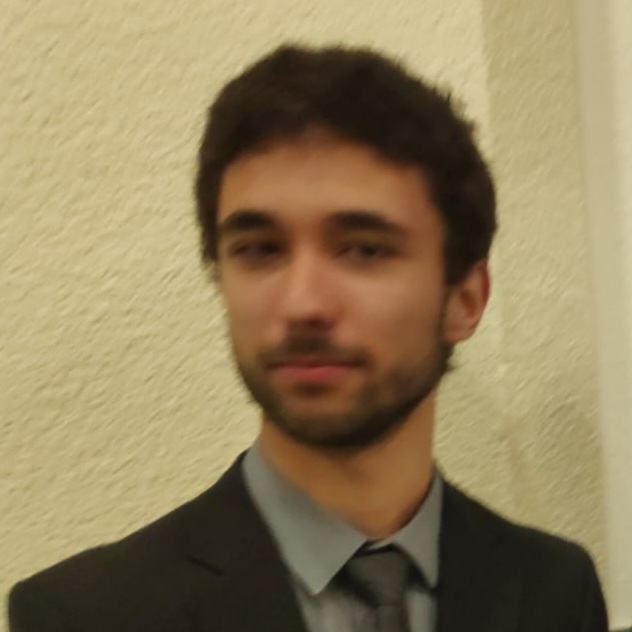

About me

Hello, I'm a software developer from Valencia, Spain. I have a passion for coding and I can code mainly in C/C++, Python or Java.
I have experience in developing ML-based medical imaging projects: “Semi-automatic marking of cell nuclei in histopathology images to build a validation dataset” (Tools: Python, YOLO, OpenCV, ML...).
I also code in my free time, you can see some of my projects here.
Awards
- 2018 — 2nd place (public vote), Experimenta Science Fair, Valencia — magnetic-lock Arduino experiment.
Languages & Certifications
- Spanish — Native
- English — C1 (Cambridge, June 2019)
- Valencian — Basic level
- Cisco CCNA v7 — Introduction to networking (2022)
Main Skills
Programming
- Python, Java, C/C++, Prolog, LISP
- JFLEX / Java CUP, low-level (DLX / assembly)
Web & Databases
- HTML5, CSS, JavaScript, PHP, Servlets, JSP
- SQL, PL/SQL, Oracle
ML & Vision
- Scikit-learn, PyTorch, YOLO, OpenCV
Tools & Practices
- Git, Linux, Docker, Agile (Scrum), testing (pytest)
- Parallel programming: OpenMP, MPI; Matlab